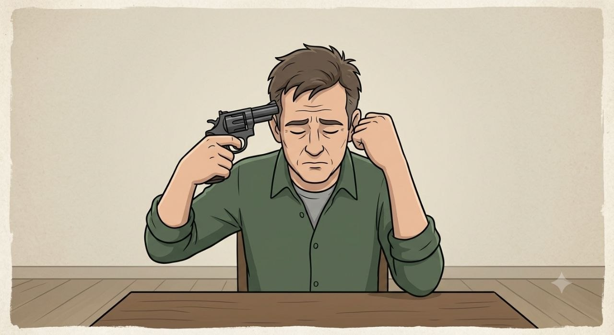
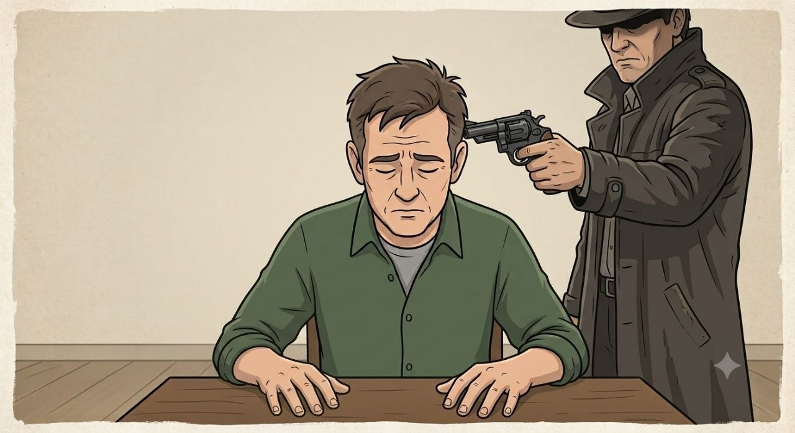

ရဲတပ်ဖွဲ့သည် လူသတ်မှုဖြစ်ပွားရာနေရာသို့ ရောက်ရှိလာခဲ့သည်။ ထိုနေရာတွင် ဦးခေါင်းကို သေနတ်မှန်ထားသော အလောင်းတစ်ခုနှင့် ရုပ်အလောင်း၏ ညာဘက်လက်အနီး ကြမ်းပြင်ပေါ်တွင် သေနတ်တစ်လက်ကို တွေ့ရှိရသည်။ ရဲတပ်ဖွဲ့က ထိုနေရာ၌ရှိသော အသံဖမ်းစက်ကို ဖွင့်ကြည့်ရာ ၁၀ စက္ကန့်စာ အသံဖိုင်ပါဝင်ပြီး ၎င်းထဲတွင် ငိုယိုသံနှင့် နောက်ဆက်တွဲ သေနတ်ပစ်ခတ်သံကို ကြားရသည်။ ဒါဟာ လူသတ်မှုလား၊ ဒါမှမဟုတ် သေကြောင်းကြံစည်မှု (သူ့ကိုယ်သူ သတ်သေမှု) လား။

ရေရေရာရာ မသိနိုင်ပါ

သေကြောင်းကြံစည်မှု

လူသတ်မှု